11 Richmond City
This chapter is a summary of the major changes to the City of Richmond’s population and housing market in the past five years.
11.1 Takeaways
- The City of Richmond has largely grown as a result of international migration and natural increase (+817 between 2020 and 2021).
- Growth in renter households in the city has been the direct result of nonfamily households — while renters with children have significantly decreased (-2,192).
- Rents across the city have grown substantially, especially the Northside and Southside rental markets (growing by nearly 40 percent, respectively since 2016).
- The typical renter household still has an income unable to afford the average asking rent, as well as the median home price in the city.
- Renter cost burden has increased 1,107 households from 2015 to 2018.
- The greatest need still remains for households making below 30 percent AMI; there was a shortage of nearly 11,000 rental homes for extremely low-income households.
11.2 Demographic and socioeconomic changes
11.2.1 Population changes
Between 2010 and 2020, the U.S. Census Bureau has estimated that the City of Richmond has grown by 11 percent — an increase of 22,396 residents. Throughout much of the decade the city has been on a slow upward trend until 2020. The 2020 Census estimate shows a slight decline from the 2019 estimate — a loss of 3,826 residents. This change could be a result of the difficulties associated with undercounts during the 2020 Census.
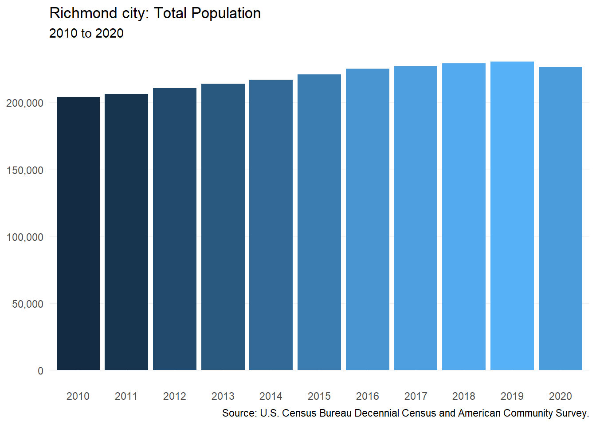
Census estimates from 2016 show Richmond gaining more than 2,000 net persons that year who moved from somewhere else in the state or country. However, the city has experienced a net loss in domestic migration since then. The majority of the city’s population growth over the past five years has been due to migration from abroad along with natural increases through new births.
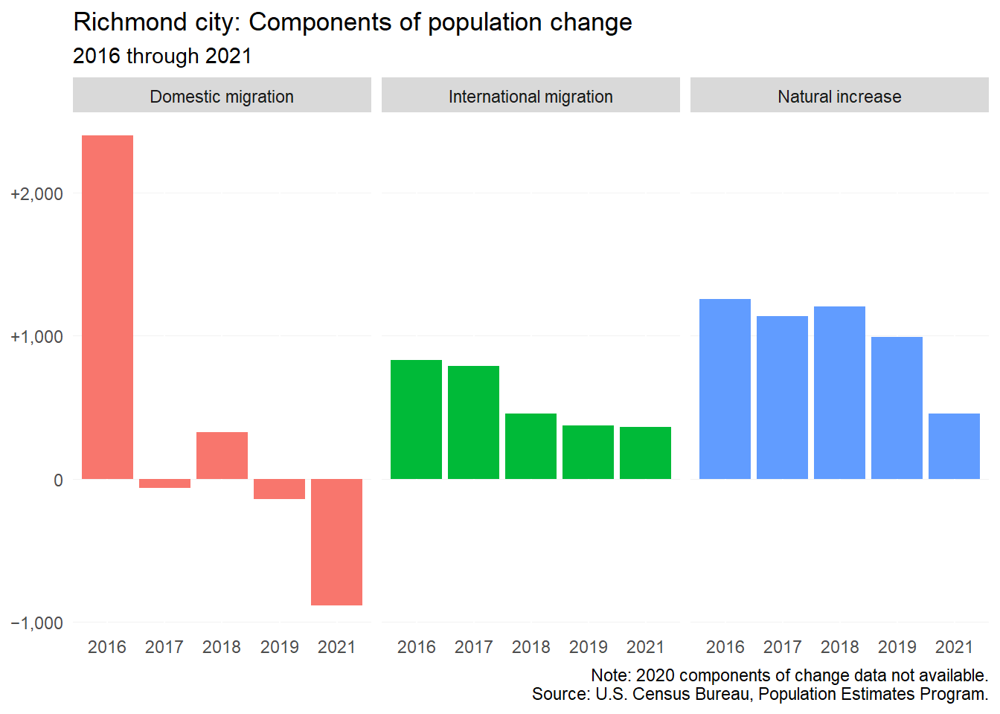
11.2.2 Household characteristics
Between 2016 and 2020, there have been distinct changes between homeowner and renter households in the city. The city has seen a 2,555 increase in homeowner households with no children, while the number of renter household with no children has decreased by 607. At the other end of the spectrum, there has been a significant decrease in renter households with children (-2,192), while there are only 162 fewer homeowner households with children in the city. These trends seem to suggest affordability challenges in the homeownership and rental markets of the city.
New homeowners without children (and with fewer financial responsibilities) often find it easier to afford a home, while renters with children are finding it difficulty to afford even a rental — most likely due to lack of larger rental options, as well as increasing costs.
Nonfamily households have seen an increase for both homeowners and renters, but especially for renters (+1,874). This is likely a result of the student population, as well as young professionals, needing additional roommates to afford increasing rents in the city.
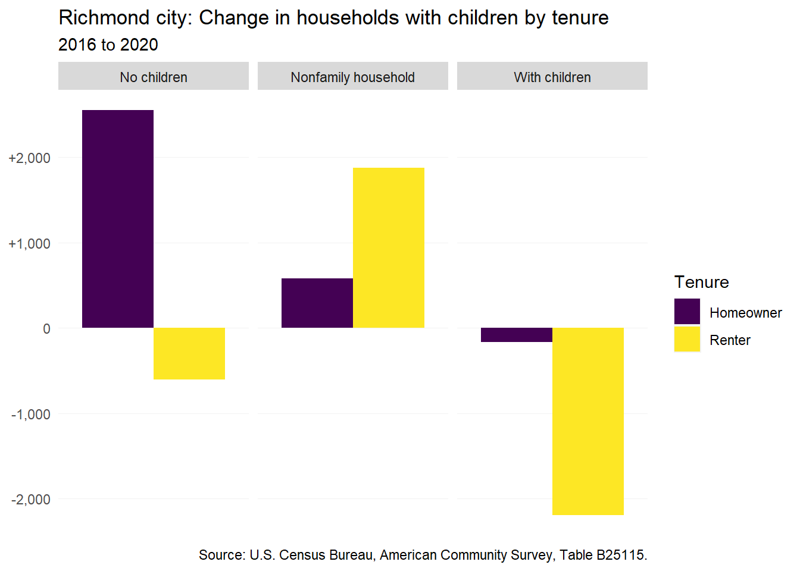
Since 2016, the number of seniors (65 years and over) has been on the rise in the city — especially among seniors living alone (+1,695). The rise in seniors living alone is a result of the ongoing desire of older adults to age in place. As this trend continues, so do concerns for senior ability to age in place comfortably with ongoing home maintenance needs or rising rent on fixed incomes.
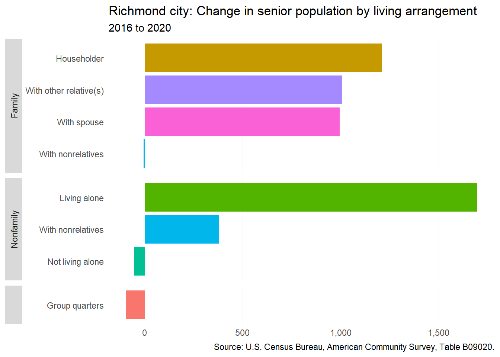
11.2.3 Income and wages
There are wide disparities between homeowner and renter incomes in the City of Richmond. The median homeowner household income ($79,858) is over double that of the median renter household income ($36,249). This gap has been persistent in spite of a 16 percent increase in median household income for renters between 2016 and 2020.

11.2.4 Persons with disabilities
Independent living difficulties make it necessary for many individuals to seek assisted living facilities or significant modifications to their home to continue to live comfortably. However, both options can be costly — increasing the need for funding of home accessibility rehabilitation or new accessible housing construction.
Since 2016, there are now over 500 more persons in the city with independent living difficulties. This growth has been among younger adults (under 35) and “young” seniors (65 to 74). The latter group’s growth is likely the result of middle-age adults with these difficulties (which saw a large decline) aging into this category in the last five years.
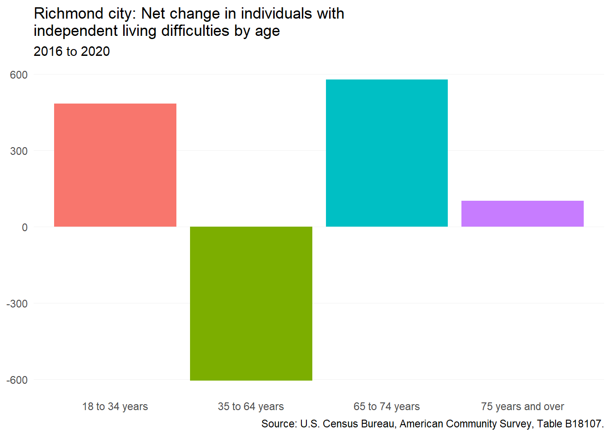
11.3 Housing supply and market changes
11.3.1 Homeownership
From the start of 2017 to June 2022, the median home price in the city has increased by 85 percent — going from $210,500 to $389,950.
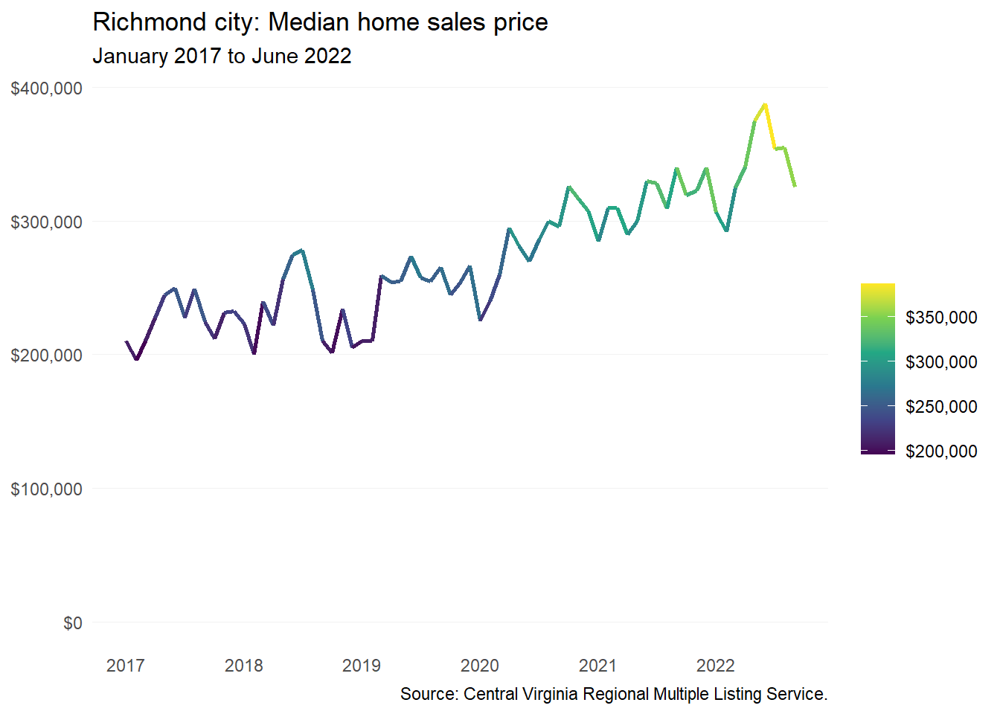
11.3.2 Rental
Rents across the city have steadily risen over the last ten years, accelerating most rapidly in the pandemic’s wake since 2020. This trend is present across all of CoStar’s five submarkets for the city, especially for Northside and South Richmond. These submarkets have seen some of the largest average rent increases over time, each growing around 40 percent since 2016.
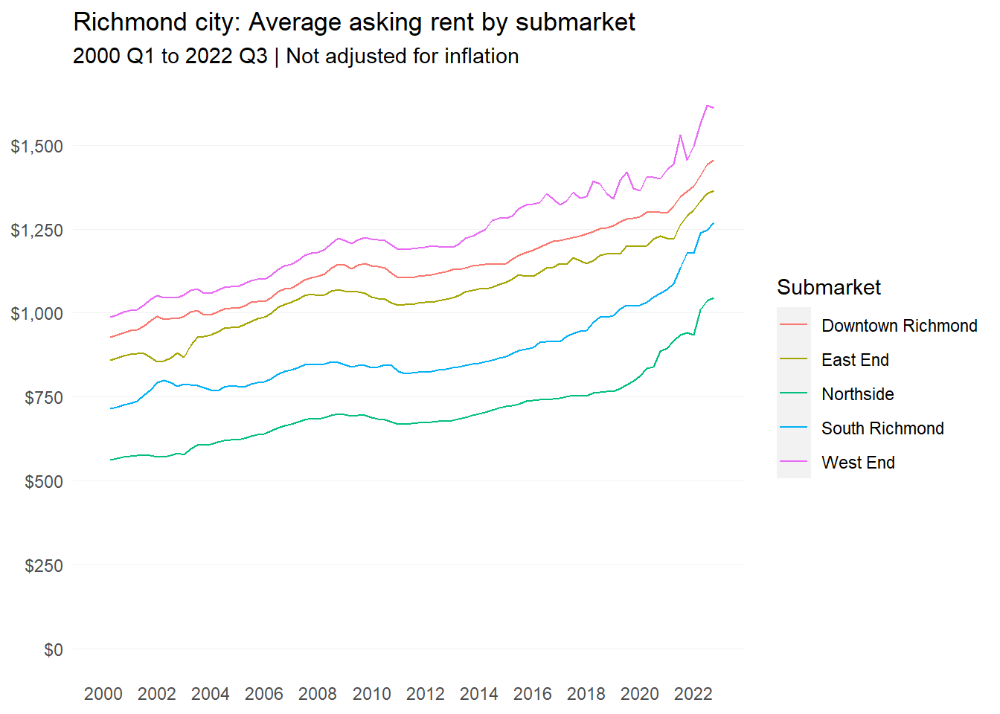
| Richmond submarket | 2016 Q1 Rent | 2022 Q3 Rent | Percent change |
|---|---|---|---|
| Northside | $742 | $1,045 | 41% |
| South Richmond | $912 | $1,268 | 39% |
| East End | $1,120 | $1,365 | 22% |
| Downtown Richmond | $1,196 | $1,455 | 22% |
| West End | $1,328 | $1,611 | 21% |
| Note: | |||
| 2016 Q1 Rent has not been adjusted for inflation |
11.3.3 Housing assistance
Since January 2020, Richmond has seen 23 new rental subsidies added, which increased the number of active affordability contracts on units by 1,869. Over that same period, 10 subsidies ended, affecting 435 units. Some properties had multiple subsidies either added or expired. In all, there was a net addition of 1,434 rental affordability contracts.
| Subsidies | Properties affected | Units included | |
|---|---|---|---|
| Added | 23 | 22 | 1,869 |
| Removed | -10 | -9 | -435 |
| Net change | 13 | 13 | 1,434 |
| Sources: National Housing Preservation Database and Virginia Housing. |
11.3.4 Naturally-occurring affordable housing
As defined in this report, there are 128 rental properties in the City of Richmond that qualify as naturally-occurring affordable housing. There are more than 9,100 apartments across these properties, which make up approximately 25 percent of all multifamily (two or more units) rental housing in the city.
Older NOAH properties command slightly higher rents than those built in 1960 and beyond. Most of the pre-1960 properties are located in the city’s older neighborhoods north of the river, such as Shockoe Bottom and The Fan, and have average rents between $1,000 and $1,400. “Newer” NOAH units built in the 1960s and afterward are generally located in the Northside and Southside areas of the city and have average rents between $750 and $1,000.
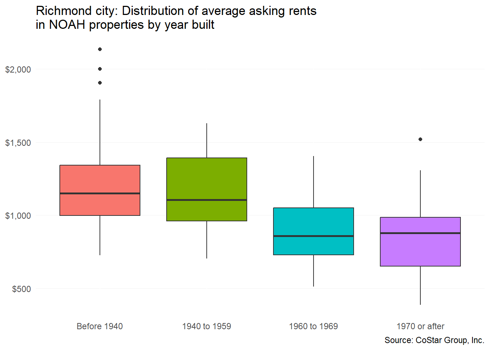
11.4 Gap analysis
11.4.1 Affordability of current housing stock
Based on the 2020 median renter income estimate, the affordable rent for an average renting household is around $900. This was several hundred dollars below what the average asking rent for an apartment was in 2020. Although low-end wage growth has increased the purchasing power of working class households, extra take-home pay is likely to be used up for higher costs of goods—and accelerating rents.
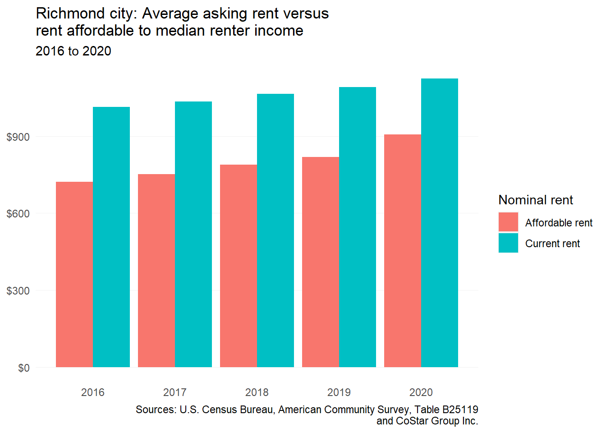
The average renter in the city would also be very challenged to find an affordable home to purchase. This gap does not even factor in downpayment savings, credit worthiness, and other important factors.
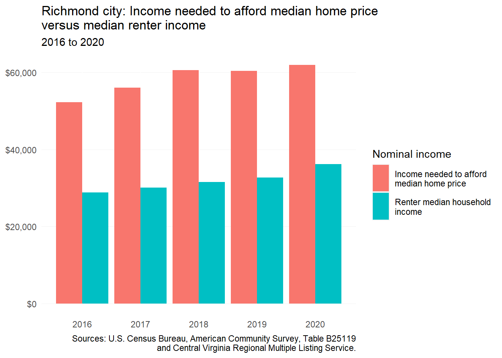
Based on HUD Comprehensive Housing Affordability Strategy (CHAS) data, there was a shortage of 17,834 rental homes for households making less than 80 percent AMI. This was a deficit increase of 300 homes from 2015 when the shortage was 17,534. The most severe shortage in the City of Richmond is among deeply affordable rentals for households at 30 percent AMI or less.
But there has been a growing shortage among higher income households between 31 and 80 percent AMI.
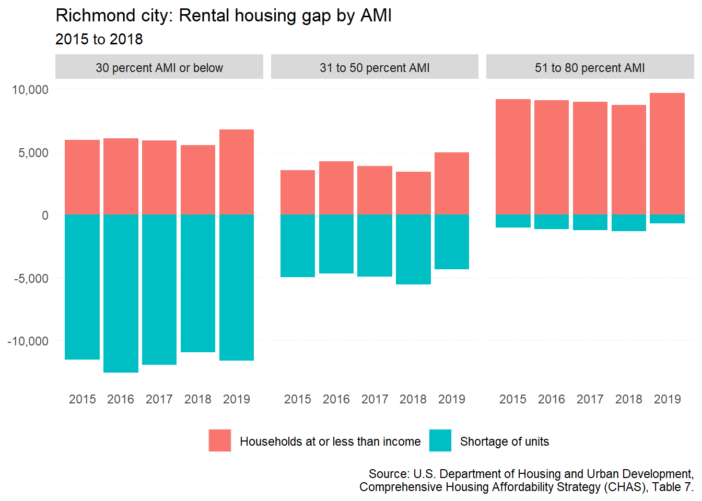
11.4.2 Impact of housing costs
Rising rents have continued to increase the number of renters with cost burden in the city, although there are possible signs of decelerating growth. Meanwhile, cost burden among homeowners is become much less common.
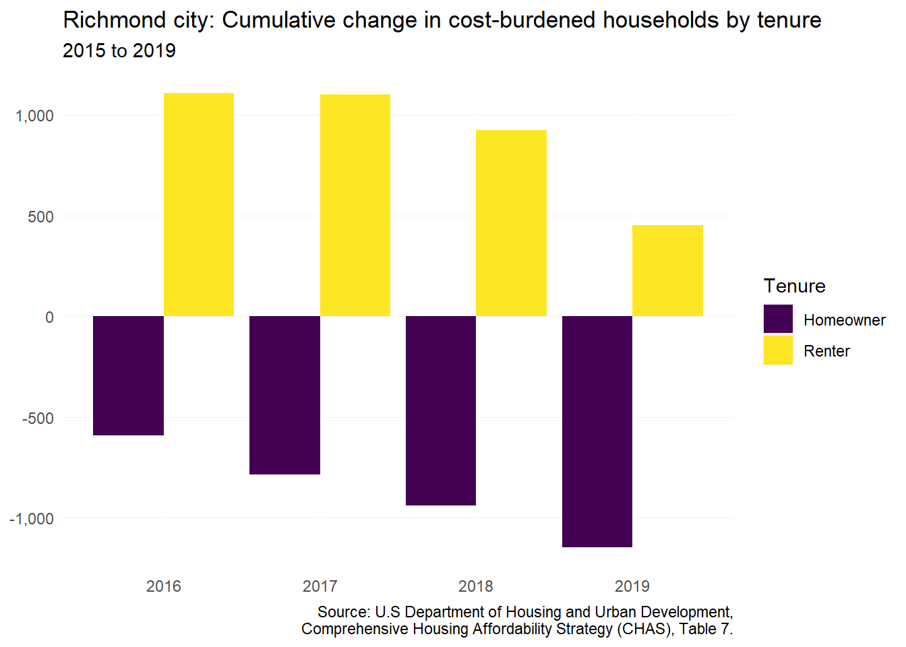
Federal and state eviction protections during the pandemic significantly reduced the number of eviction filings and judgements processed by Richmond City District Court. However, these measures have now expired—along with the state’s rent relief program. This data does not include the summer months of 2022, when many observers have started to notice an increase in filings.